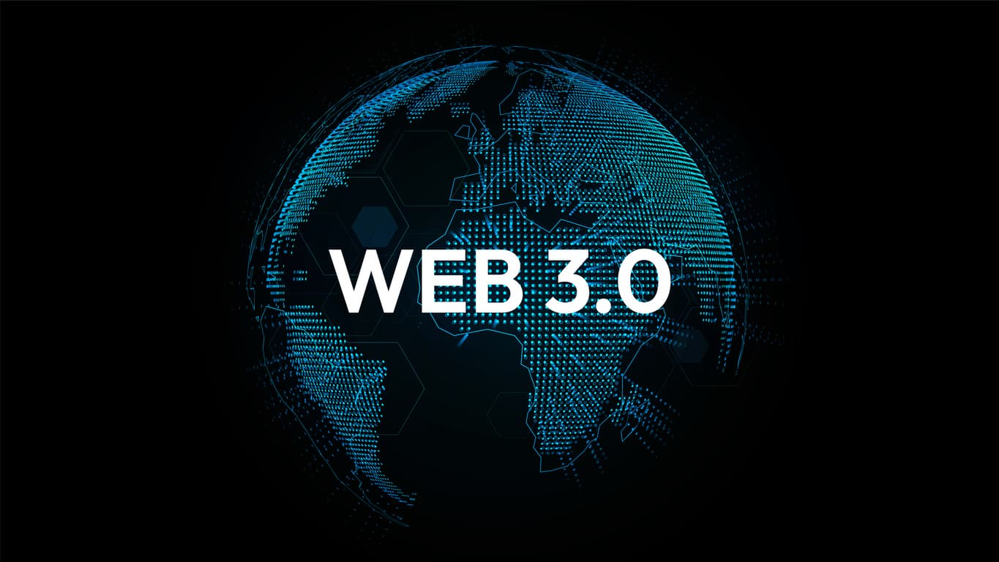

Línea del Tiempo Evolución de la Web
Web 1.0
 El término Web 1.0 no apareció hasta que el término Web 2.0 fue acuñado en 1999 por Darci DiNucci . Durante ese tiempo, la web estaba experimentando una gran transformación. La mayoría de los sitios web en la década de 1990 se habían creado originalmente con páginas HTML estáticas y algunos estilos simples incrustados en el marcado HTML. A fines de la década de 1990 y principios de la década de 2000, las características interactivas del sitio web redefinieron lo que se podía lograr en un navegador web
y marcaron un punto importante de evolución en el mundo del desarrollo web.
Web 1.0 coincidió con un momento en que las conexiones de acceso telefónico a Internet eran comunes. Las páginas con largas listas de comentarios de usuarios tardarían mucho en cargarse a través de una conexión de acceso telefónico. Un Libro de visitas fue una solución al deseo de permitir comentarios de los usuarios sin empantanar el rendimiento general de un sitio web. De esta forma, se permitieron los comentarios de los usuarios,
pero no ralentizaron el rendimiento de las páginas de contenido. La web 1.0, fue la primera (apareció hacia 1990) y en ella solo se podía consumir contenido. Se trataba de información a la que se podía acceder, pero sin posibilidad de interactuar; era unidireccional.
El término Web 1.0 no apareció hasta que el término Web 2.0 fue acuñado en 1999 por Darci DiNucci . Durante ese tiempo, la web estaba experimentando una gran transformación. La mayoría de los sitios web en la década de 1990 se habían creado originalmente con páginas HTML estáticas y algunos estilos simples incrustados en el marcado HTML. A fines de la década de 1990 y principios de la década de 2000, las características interactivas del sitio web redefinieron lo que se podía lograr en un navegador web
y marcaron un punto importante de evolución en el mundo del desarrollo web.
Web 1.0 coincidió con un momento en que las conexiones de acceso telefónico a Internet eran comunes. Las páginas con largas listas de comentarios de usuarios tardarían mucho en cargarse a través de una conexión de acceso telefónico. Un Libro de visitas fue una solución al deseo de permitir comentarios de los usuarios sin empantanar el rendimiento general de un sitio web. De esta forma, se permitieron los comentarios de los usuarios,
pero no ralentizaron el rendimiento de las páginas de contenido. La web 1.0, fue la primera (apareció hacia 1990) y en ella solo se podía consumir contenido. Se trataba de información a la que se podía acceder, pero sin posibilidad de interactuar; era unidireccional.
Web 2.0
 La web 2.0, (apareció en 2004) y contiene los foros, los blogs, los comentarios y después las redes sociales. La web 2.0 permite compartir información.
Y aquí estamos, de momento la mayor parte de los consumidores.
La Web 2.0 es una segunda generación de servicios basados en la Web, que enfatiza en la colaboración online, la conectividad y
la posibilidad de compartir contenidos entre los usuarios.
La Web 2.0 implica la evolución de las aplicaciones digitales hacía aplicaciones dirigidas al usuario final, que incluyen servicios como redes sociales,
blogs wikis y las folcsonomías
La web 2.0, (apareció en 2004) y contiene los foros, los blogs, los comentarios y después las redes sociales. La web 2.0 permite compartir información.
Y aquí estamos, de momento la mayor parte de los consumidores.
La Web 2.0 es una segunda generación de servicios basados en la Web, que enfatiza en la colaboración online, la conectividad y
la posibilidad de compartir contenidos entre los usuarios.
La Web 2.0 implica la evolución de las aplicaciones digitales hacía aplicaciones dirigidas al usuario final, que incluyen servicios como redes sociales,
blogs wikis y las folcsonomías
Web 3.0

La web 3.0 (fue operativa en el 2010) y se asocia a la web semántica, un concepto que se refiere al uso de un lenguaje en la red. Por ejemplo,
la búsqueda de contenidos utilizando palabras clave.
El término de Web 3.0 fue acuñado, en 2014, por Gavin Wood, el cofundador de Ethereum, el cual explicaba que esta Web 3.0 pondría solución a un problema de confianza y seguridad que muchos usuarios de las criptomonedas sienten. Además de acabar con el monopolio de unas
pocas empresas para que ahora actúen por el interés público.
Web 4.0
 La web 4.0. empezó en el 2016 y se centra en ofrecer un comportamiento más inteligente y más predictivo, de modo que podamos, con sólo realizar una afirmación o una llamada, poner en marcha un conjunto de acciones que
tendrán como resultando aquello que pedimos, deseamos o decimos.
Tal vez te estas preguntando cómo llegamos a la Web 4.0. La respuesta es sencilla: gracias a la propia evolución de la tecnología que estamos viviendo ya. En estos momentos, empresas como Google, Microsoft o Facebook, entre otras, están desarrollando nuevos sistemas que gracias al Deep Learning y Machine Learning serán capaces de procesar más información de forma similar a cómo lo haría el cerebro humano.
La web 4.0. empezó en el 2016 y se centra en ofrecer un comportamiento más inteligente y más predictivo, de modo que podamos, con sólo realizar una afirmación o una llamada, poner en marcha un conjunto de acciones que
tendrán como resultando aquello que pedimos, deseamos o decimos.
Tal vez te estas preguntando cómo llegamos a la Web 4.0. La respuesta es sencilla: gracias a la propia evolución de la tecnología que estamos viviendo ya. En estos momentos, empresas como Google, Microsoft o Facebook, entre otras, están desarrollando nuevos sistemas que gracias al Deep Learning y Machine Learning serán capaces de procesar más información de forma similar a cómo lo haría el cerebro humano.
Regresar al inicio